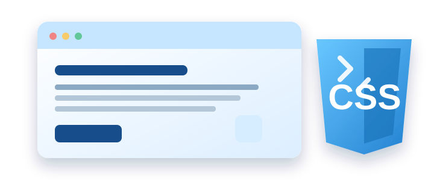

المادة: تطبيقات الإنترنت والمنصات الإلكترونية
إعداد الطالب: يوسف طارق طه محمود
الرقم الجامعي: 2502577
المعهد: معهد الدلتا العالي لنظم المعلومات الإدارية والمحاسبية
إشراف: الدكتورة مها زغلول
العام الدراسي: 2026 / 2027

أصبحت مواقع الويب من أهم وسائل الحصول على المعلومات والتواصل والتعلم والتسوق عبر الإنترنت. ولا يعتمد نجاح الموقع على المعلومات التي يقدمها فقط، بل يتأثر أيضًا بطريقة عرض هذه المعلومات ومدى سهولة استخدامها وجاذبية تصميمها.
وهنا تظهر أهمية لغة CSS، وهي اختصار لعبارة Cascading Style Sheets، وتُعرف باللغة العربية باسم أوراق الأنماط المتتالية. تُستخدم CSS لتحديد المظهر الخارجي لصفحات الويب، مثل الألوان والخطوط والخلفيات والمسافات وأحجام العناصر، وتعمل عادةً بجانب لغة HTML التي تُستخدم لبناء هيكل الصفحة وتحديد محتواها. ويساعد الفصل بين المحتوى والتصميم على تنظيم الكود وتسهيل تعديله وتطويره.
CSS لغة تُستخدم لوصف كيفية ظهور عناصر صفحات الويب في المتصفح. فعلى سبيل المثال، يمكن استخدامها لتغيير لون عنوان، أو تكبير حجم الخط، أو إضافة خلفية لفقرة، أو تحديد المسافة بين الصور والنصوص.
وتتمثل أهميتها في أنها تمنح المطور قدرة أكبر على التحكم في شكل الموقع، مع إمكانية تطبيق تصميم موحد على صفحات متعددة بدلًا من تنسيق كل عنصر بصورة منفصلة. كما تساعد على تحسين تنظيم الصفحة وجعل المحتوى أكثر وضوحًا للمستخدم.
تعتمد CSS عادةً على قواعد تنسيق تتكون من ثلاثة أجزاء أساسية: المحدد (Selector)، والخاصية (Property)، والقيمة (Value). يحدد المحدد العنصر الذي نريد تنسيقه، وتحدد الخاصية الجانب المراد تغييره، بينما تحدد القيمة الشكل المطلوب لهذه الخاصية.
مثال على قاعدة CSS:
h1 {
color: blue;
font-size: 28px;
}في هذا المثال، يشير h1 إلى العناوين من المستوى الأول، وتحدد color لون النص، بينما تحدد font-size حجم الخط. والنتيجة ظهور هذه العناوين باللون الأزرق وبحجم 28 بكسل.
يمكن إضافة CSS إلى صفحات الويب بثلاث طرق رئيسية:
| الطريقة | مكان كتابة التنسيق | الوصف |
|---|---|---|
| التنسيق الداخلي للعنصر | داخل العنصر نفسه باستخدام الخاصية style | تُكتب قواعد التنسيق داخل العنصر المراد تنسيقه. |
| التنسيق الداخلي للصفحة | داخل وسم style في ملف HTML | تُكتب قواعد CSS داخل صفحة HTML نفسها. |
| التنسيق الخارجي | في ملف مستقل امتداده .css | تُحفظ القواعد في ملف منفصل ويُربط بصفحة HTML. |
ويُعد استخدام الملف الخارجي خيارًا مناسبًا في كثير من المواقع؛ لأنه يساعد على فصل التصميم عن المحتوى، كما يسمح بإعادة استخدام التنسيقات وتعديلها بسهولة.
لنفترض أننا نريد إنشاء صفحة بسيطة لمعهد تعليمي تحتوي على عنوان وفقرة وزر. يمكن كتابة هيكل الصفحة باستخدام HTML، ثم استخدام CSS لتنسيقه. فعلى سبيل المثال، يمكن تحديد خلفية فاتحة للصفحة، وجعل العنوان باللون الأزرق، وإضافة خلفية ملونة للزر مع تغيير المسافات حول العناصر.
القواعد التالية مثال على تنسيق العنوان والفقرة والزر باستخدام CSS:
h1 {
color: #164e8a;
text-align: center;
}
p {
font-size: 18px;
line-height: 1.7;
}
button {
background-color: #164e8a;
color: white;
padding: 10px 20px;
border: none;
border-radius: 6px;
}يوضح المثال كيف يمكن لعدد قليل من قواعد CSS أن يجعل الصفحة أكثر تنظيمًا ووضوحًا. فالعنوان يظهر في المنتصف، ويصبح النص أسهل في القراءة بسبب ضبط حجم الخط والمسافة بين السطور، بينما يظهر الزر بخلفية زرقاء ونص أبيض وحواف مستديرة.
وهذا يوضح أن CSS لا تقتصر على إضافة الألوان فقط، بل تشمل أيضًا تنظيم العناصر وتحسين طريقة عرض المحتوى.
يستخدم الزوار مواقع الويب من خلال أجهزة مختلفة، وقد تختلف أحجام شاشاتها بدرجة كبيرة. لذلك يحتاج المطور إلى تصميم يستطيع التكيف مع هذه الاختلافات دون أن يصبح المحتوى مزدحمًا أو يصعب قراءته.
تساعد CSS على تحقيق ذلك باستخدام تقنيات مثل Media Queries، التي تسمح بتطبيق تنسيقات معينة وفقًا لخصائص الشاشة. فعلى سبيل المثال، يمكن جعل النصوص أصغر قليلًا أو تغيير ترتيب العناصر عند عرض الموقع على شاشة هاتف بدلًا من شاشة حاسوب.
ويؤدي الاهتمام بالتصميم المتجاوب إلى تحسين سهولة الاستخدام وإتاحة المحتوى لعدد أكبر من الزوار. كما ينبغي مراعاة وضوح الألوان وحجم الخطوط وسهولة التمييز بين العناصر عند تصميم الصفحات.
تُعد CSS من اللغات الأساسية في تطوير واجهات مواقع الويب؛ لأنها تمنح المطور القدرة على التحكم في المظهر وتنظيم عناصر الصفحات وتحسين تجربة المستخدم. كما أن استخدامها بجانب HTML يساعد على الفصل بين محتوى الصفحة وطريقة عرضه، مما يجعل تطوير المواقع وصيانتها أسهل.
ومع زيادة استخدام الهواتف والأجهزة المختلفة في تصفح الإنترنت، تزداد أهمية تعلم CSS وفهم خصائصها الأساسية، خاصةً تنسيق الألوان والخطوط وترتيب العناصر والتصميم المتجاوب. لذلك فإن إتقان أساسيات هذه اللغة يمثل خطوة مهمة لكل شخص يرغب في تعلم تصميم وتطوير مواقع الويب.
تاريخ الاطلاع على المصادر كما ورد في التقرير: 19 أكتوبر 2026.